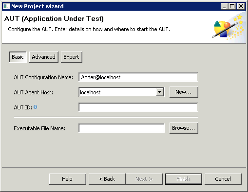

You can use the basic setting (3.12) to configure your AUT if it can be started by an executable file (e.g. .bat, .exe, .cmd, .sh etc.) and if it is written in Java 1.5 or above, and you are using a Java Standard Edition JRE.
![\includegraphics[height=2cm]{danger}](img1.jpg) |
If you are testing RCP or GEF AUT's , there are certain specific steps you need to take to configure them. See the sections on RCP testing 4.2, GEF testing 4.3 for details. |
Figure 3.12: AUT configuration window: basic
|

|
- Enter the basic configuration details as described earlier 3.7.2.
- Enter the executable file name in the Executable File Name field. This path can be relative if you define a working directory 3.7.5.3).
For information on the advanced properties for the AUT configuration, see the next section 3.7.5.3.
Copyright BREDEX GmbH 2014. Made available under the Eclipse Public License v1.0.